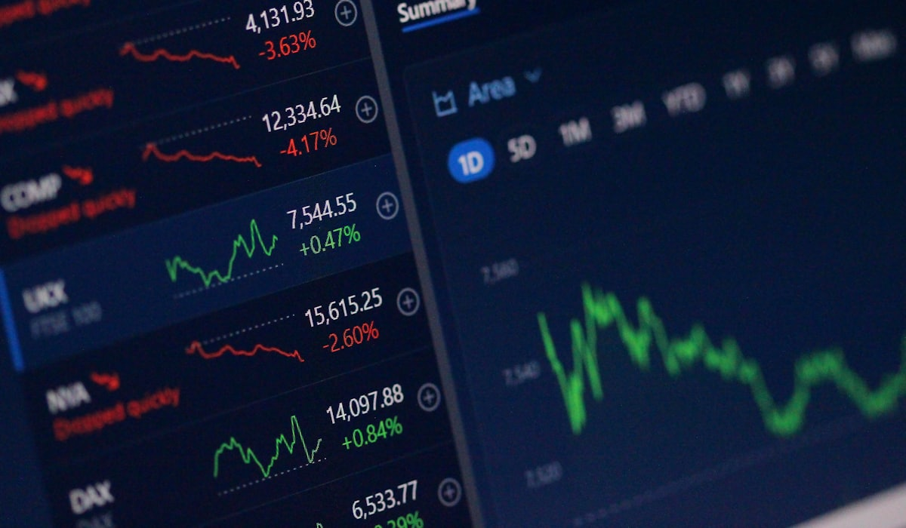

Lead Brief · Macro
US inflation data and the Fed: how it moves markets
A framework for reading CPI, FOMC expectations, bond yields, the dollar, gold, growth stocks, and crypto — all in one place.
Weekly market intelligence Vol. 07 — Jul 2026
Kerly Finance reads macro data, central-bank policy, earnings, crypto flows, forex, bonds, and commodities — then writes the brief that separates the event from the market's real response.
Lead brief
Hand-picked from the research desk: the catalyst, the sensitive assets, and how to read the first reaction.
A framework for reading CPI, FOMC expectations, bond yields, the dollar, gold, growth stocks, and crypto — all in one place.
The ledger
Aug 16 ’26
Commodities
Oil supply shocks: how to read inflation and market riskSeparate a temporary price move from a macro supply shock.
Aug 11 ’26
Equities
Earnings revisions and market breadth: is an equity rally durable?Test leadership through profit expectations and market participation.
Aug 07 ’26
Crypto
Stablecoin regulation and crypto market structure: what changes matter?Policy, reserves, settlement, and the liquidity details that matter.
Aug 02 ’26
Forex
The Japanese yen carry trade: a global risk signalRate differentials, volatility, and cross-market risk confirmation.
Jul 05 ’26
Forex
A stronger US dollar: how DXY hits emerging markets
DXY, yields, capital flows, and risk assets often move in the same chain.
Jul 03 ’26
Equities
The AI stock rally: valuation, earnings, and correction risk
Telling healthy profit growth from euphoria while tech leads global indices.
Jul 02 ’26
Bonds
Rising bond yields: why growth stocks come under pressure
Higher yields change the discount rate, valuations, rotation, and risk appetite.

Jun 30 ’26 Strategy Risk-on vs risk-off: a weekly checklist A practical framework for DXY, US10Y, gold, oil, crypto, breadth, and rotation. Jun 29 ’26 Commodities Gold's rally: safe haven, real yield, and strategy Gold isn't only a fear trade — real yields, the dollar, and liquidity all matter. Jun 26 ’26 Crypto Bitcoin ETF flows: reading institutional demand ETF flows, futures basis, funding rates, and dominance map a rally's quality. Jun 22 ’26 Earnings Earnings season: three numbers that move stocks Revenue, margins, and guidance often matter more than the headline EPS print. Jun 18 ’26
Strategy
Building a trading watchlist for high volatility
Sorting setups, catalysts, technical levels, liquidity, and risk in one workflow.
Jun 18 ’26
Strategy
Building a trading watchlist for high volatility
Sorting setups, catalysts, technical levels, liquidity, and risk in one workflow.

The desks
Each desk builds one complete market view — from the macro catalyst to asset positioning.
Research framework
A repeatable framework for moving from a market headline to the data, assets, risks, and scenarios that deserve attention next.
Kerly Finance turns market news into market intelligence by separating the event from the market response. A CPI release, policy decision, earnings update, or crypto-flow headline is only the starting point. We compare it with market expectations, the yield curve, the dollar, breadth, positioning, and liquidity to explain why prices may confirm, reject, or ignore the first reaction. The result is a clearer financial signal: what changed, which assets are most exposed, what data could invalidate the initial view, and what to monitor next.
The goal is not to predict every price move. Market intelligence is a disciplined way to build scenarios when the facts are still developing. A stronger dollar can matter differently when yields are rising because of inflation than when yields are falling because growth is slowing. An earnings beat can support a stock, but weak guidance, narrow breadth, or tighter financial conditions can change the quality of that signal. Reading those relationships helps keep a headline in context instead of treating it as a standalone trade idea.
Before the market opens, the practical question is not simply whether an update sounds good or bad. It is whether the update changes the expectations already reflected in prices. Kerly Finance starts with the consensus, then watches the early response in the most sensitive markets: Treasury yields and the dollar for macro surprises; breadth and sector leadership for equities; liquidity and positioning for crypto; and real yields for gold. A move that holds across those signals carries more information than an isolated headline reaction. A move that quickly fades can be equally useful, because it shows that the market had already priced the event or is focused on a different risk.

About Kerly Finance
Kerly Finance is a market intelligence publication for investors and traders who want to understand market news before it turns into price. Every brief follows an editorial structure: the thesis, the data to check, the sensitive assets, the risks, and the scenarios that follow.
The research is designed to make market context usable: what the data says, how expectations may shift, which assets are sensitive, and where the first interpretation could be wrong. That makes each brief useful before a catalyst, during the initial reaction, and when deciding whether a market move has real confirmation.
Research references public market data from the Federal Reserve, BLS, U.S. Treasury, and SEC.
Read our editorial standards and correction policy.
Newsletter
One email with the macro calendar, stock catalysts, crypto flows, commodities, and the risk-on/risk-off scenarios for the week ahead.
No spam. No hype. Just market signals worth reading.